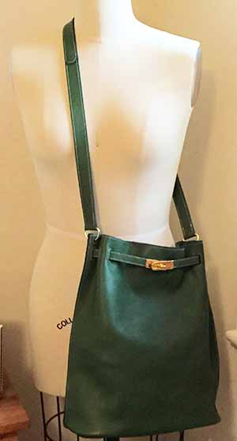

Past Projects
Note that all of the projects use 3 oz leather.
Equestrian Bag
I adapted the pattern from Laura Bennett's book Handmade Chic in Illustrator.
Crossbody Bag

This bag is my own design and incorporates features from other bags that I had seen and liked.
Small Leather Goods
You can never have enough zip bags, card cases, or key rings.